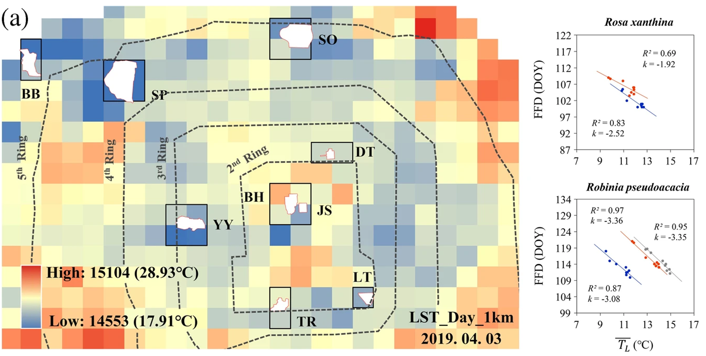
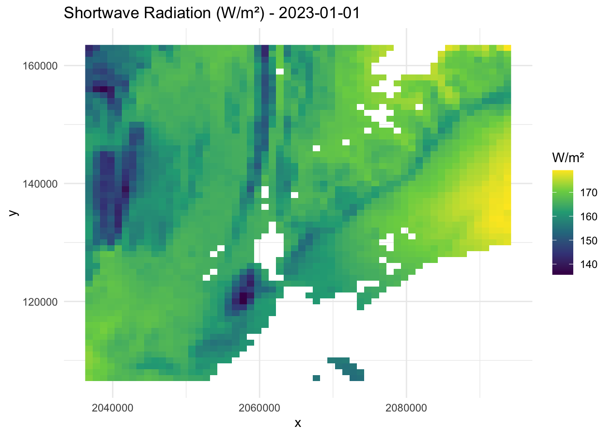
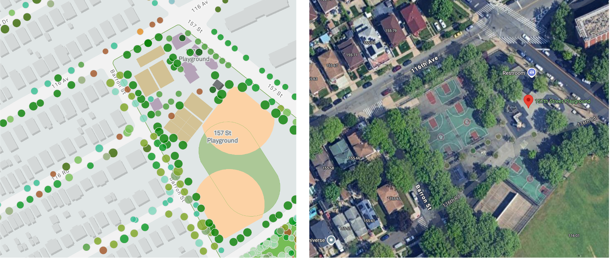

Phenology, the timing of periodic plant life cycle events, is sensitive to biotic and abiotic environment, especially the temperature (Meng et al., 2020).
The significant Urban Heat Island effect leads to the shifts in urban phenology (L. Yang et al., 2023; Y. Zhou, 2022)
Treat city as a whole.
Compare it to rural areas.
Spatial unevenness of urban thermal environment might lead to the heterogeneity of phenology within the city.
Negative correlation between the flowering date and the monthly mean LST in February–April.
Figure 1: Katz et al., 2019
A significant spatial variation for First flowing date of 35 species, which negatively correlated withdaily LST.

Figure 2: Xing et al., 2022
Question and Hypothesis
Question: What is the spatial heterogeneity of individual tree phenology within a city, and across cities located in different climate regions? (genus and species level)
Hypothesis:
There is a significant spatial heterogeneity.
Spatial heterogeneity in urban phenology is driven by the heterogeneous urban thermal environment
The magnitude and direction of this effect may differ among cities.
Goal:
Insights into how vegetation adapts to altered environmental conditions under urbanization.
Addresses the biological and societal consequences of phenological changes.
The urban microclimate information comes from the Weather Underground program. There are 4 raw daily variables selected, i.e. AvgTemp, HighTemp, LowTemp and SumPrcp. I flagged the records which are unknown or questionable according to the methods applied by Global Historical Climatology Network daily GHCNd.
For initial analysis, I collect the date from 4 cities, i.e. New York, Houston, Detroit, and Seattle.
Code
# No. of WU sitesdata <-data.frame(Category =c("DV", "NY", "ST", "HT"),Number_of_Sites =c(226, 148, 367, 171))ggplot(data, aes(x = Category, y = Number_of_Sites)) +geom_bar(stat ="identity", fill ="steelblue") +geom_text(aes(label = Number_of_Sites), vjust =-0.5, size =4) +labs(x ="Category", y ="Number of Sites") +theme(legend.position ="right",axis.title.x =element_text(size =18),axis.title.y =element_text(size =18),title =element_text(size =20)) +theme_minimal()
To control for the influence of other variables on phenology, I also incorporated shortwave radiation data derived from the Daymet daily dataset with a 1 km resolution. Shortwave radiation was extracted for the specific locations of the trees.
Code
# downloadcity ="NY"data_dir <-paste0("~/phenology-urban/data/raw/", city, "/Daymet/daily2016-2024/")file <-list.files(data_dir, pattern ="srad_daily_2023_ncss\\.nc$", full.names =TRUE)srad_nc <- terra::rast(file)srad_df <-as.data.frame(srad_nc[[1]], xy =TRUE)ggplot(srad_df, aes(x = x, y = y, fill = srad_1)) +geom_raster() +scale_fill_viridis_c(name ="W/m²") +labs(title ="Shortwave Radiation (W/m²) - 2023-01-01", x ="x", y ="y") +theme_minimal()

Figure 5: The shortwave radiation raster in 2023-01-01, NY
1.3 Select the street tree base on WU data
I used the street tree in the above 4 cities, with the phenology records established by Yiluan. These trees are part of the whole inventory, covering 14 genera and being sampled. I select the trees which are within 500 m buffer around the Weather Underground sites (see Figure 6).
Figure 6: Location of WU sites and trees, zoom in NY
2 Method
2.1 Phenological indicators
The tree locations points were overlapped with Planetscope imageries to extract the reflectance values. After smoothing and regression, we could get the EVI curve. The phenological metrics were calculated based on the EVI curve:

Figure 7: Extract reflectance from PlanetScope based on tree location, an example in NY
Figure 8: Phenology metrics calculated based on EVI curve from PlanetScope
Spring phenology
SOS: Defined as the day of year when individual tree growing season EVI curves first cross the green-up 50% threshold.
Green-up Pace: Defined as the time span (in days) required for the individual tree growing season EVI curves to transition from the green-up 20% threshold to the 80% threshold.
Fall phenology
EOS: Defined as the day of year when individual tree growing season EVI curves first cross the green-down 50% threshold.
Green-down Pace: Defined as the time span (in days) required for the individual tree growing season EVI curves to transition from the green-down 20% threshold to the 80% threshold.
Preseason: Defined as the time span (in days) to calculate the average temperature and precipitation.
SOS: Winter.
Green-up Pace: Spring
EOS: Summer
Green-down Pace: Fall
2.2 Spatial model
I modeled the relationship between the phenology and environmental covariates using a spatial hierarchical model. The response variable (phenology parameter) at location \(\mathbf{s}_i\) and in year \(\mathbf{t}\), denoted as \(y(\mathbf{s}_i, \mathbf{t})\), was modeled as following model:
\(\mathbf{X}_{\mathbf{s}_i,\mathbf{t}} = [1, \text{AvgTemp}_{\mathbf{s}_i,\mathbf{t}}, \text{Precp}_{\mathbf{s}_i,\mathbf{t}}, \text{srad}_{\mathbf{s}_i,\mathbf{t}}]\) is the design matrix of predictors.
\(\boldsymbol{\beta} = [\beta_0, \beta_1, \beta_2, \beta_3]\) are the regression coefficients for the intercept and covariates.
\(\beta_1\) is the coefficient for the average temperature, which is the main interest in this study.
Spatially Correlated Random Effect: \[w(\mathbf{s}_i) \sim \text{MVN}(\mathbf{0}, \mathbf{R})\]
\(\mathbf{R}\) is the spatial correlation matrix defined by a covariance function.
In INLA, a spatial process with a Matérn covariance can be obtained as the weak solution to a stochastic partial differential equation (SPDE). The SPDE method uses the Finite Element Method (FEM) to approximate a spatial Gaussian Random Field (GRF). It constructs a triangulated mesh, where each node serves as a basis for interpolation. Basis functions are defined to be 1 at a node and decay to 0 at neighboring triangles, ensuring local influence. By discretizing the SPDE, the problem transforms into a sparse Gaussian Markov Random Field (GMRF), making computations more efficient for large spatial datasets.
\(\epsilon(\mathbf{s}_i, \mathbf{t})\) accounts for measurement error or small-scale variability.
Get the posterior distribution of model parameters:
INLA: In INLA package, the Integrated Nested Laplace Approximation (INLA) was used to approximate the posterior distribution of the model parameters. Rather than estimating the joint posterior distribution of the parameters via MCMC, INLA focusing on individual posterior marginals of the model parameters, which is enough to make inference of the model parameters and latent effects in most cases.
3 Results
3.1 Genus level
New York City
Most genera showed negative association between temperature and the SOS, either significant or insignificant, suggesting the warmer winter, the earilier start of season. There are significant genus-level differences in how temperature influences the spring phenology.
The response to temperature is more consistent in the EOS. The response to temperature is positive for all genera, suggesting the warmer summer, the later end of season.
For GreenUp and GreenDown, there is not significant association between temperature and the phenology metrics.
Figure 9: The distribution of the posterior of regression coefficients for Temp~avg~ for each genus in New York city.
Comparison across 4 cities
The response of SOS and EOS to temperature is consistent across cities: the warmer winter, the earilier start of season; the warmer summer, the later end of season.
The difference in response among cities is obvious. For SOS, most genera all cities showed negative association between temperature and the start of season. Only some genera in DV and ST had a positive association.
For EOS, the difference among cities is the most obvious. Genera in NY and ST had a higher positive association than those genera in DV. Precipitation/humidity/elevation?
Figure 10: The distribution of the posterior of regression coefficients for Temp~avg~ on phenology for each genus.
3.2 Species level
Given the tree diversity within each genera, I also explored the species-level response to temperature. Here, I select 10 most abundant species shared by these 4 cities:
Figure 12: The distribution of the posterior of regression coefficients for Temp~avg~ on phenology for each species
4 Conclusion and next step
Conclusion
Within the city, trees indeed respond to temperature variation, result in phenology variation.
Across cities, response variation patterns noticed.
Next steps
What can the urban phenology heterogenity be used for? - Goal
The preview of future warming: compared with the sensitivity in natural environment.
Fine-scale urban phenology: compared with other urban phenology sensitivity detected at coarser scale
Scale up
Cities
Genera
Source Code
---title: "Urban phenology"author: "Jiali Zhu"date: "today"format: html: code-overflow: wrap code-fold: true code-tools: true code-summary: "Code"editor: visualtoc: truetoc-depth: 3---## Introduction- Phenology, the timing of periodic plant life cycle events, is sensitive to biotic and abiotic environment, especially the temperature (Meng et al., 2020).- The significant Urban Heat Island effect leads to the shifts in urban phenology (L. Yang et al., 2023; Y. Zhou, 2022) - Treat city as a whole. - Compare it to rural areas.- Spatial unevenness of urban thermal environment might lead to the heterogeneity of phenology within the city. - Negative correlation between the flowering date and the monthly mean LST in February–April.{#fig-katz_2019 fig-align="center" width="60%"} - A significant spatial variation for First flowing date of 35 species, which negatively correlated withdaily LST. {#fig-xing_2022 fig-align="center" width="60%"}## Question and Hypothesis- **Question**: What is the spatial heterogeneity of individual tree phenology within a city, and across cities located in different climate regions? (genus and species level)- **Hypothesis**: - There is a significant spatial heterogeneity. - Spatial heterogeneity in urban phenology is driven by the heterogeneous urban thermal environment - The magnitude and direction of this effect may differ among cities.- **Goal**: - Insights into how vegetation adapts to altered environmental conditions under urbanization. - Addresses the biological and societal consequences of phenological changes.```{r}#| label: load-packages#| include: false#| warning: false# Install and load 'zhulabtools' packagelibrary(zhulabtools)# Manage packages: check, install, and load specific packagescheck_install_packages(c("dplyr","lubridate", "ggplot2", "sf","sp", "readr", "purrr", "stringr","glue", "tidyr", "broom","lme4", "broom.mixed", "ppcor", "spdep", "spatialreg", "lmtest","car", "spBayes", "coda", "patchwork", "performance", "terra", "ggpmisc", "gstat", "ggmcmc", "taxize", "INLA", "stats", "knitr", "tibble", "viridis", "kableExtra"))if (!require(plotbiomes)) { devtools::install_github("valentinitnelav/plotbiomes")}load_packages(c("dplyr","lubridate", "ggplot2", "sf","sp", "readr", "purrr", "stringr","glue", "tidyr", "broom","lme4", "broom.mixed", "ppcor", "spdep", "spatialreg", "lmtest","car", "spBayes", "coda", "patchwork", "performance", "terra", "ggpmisc", "gstat", "ggmcmc", "taxize", "INLA", "stats", "tibble", "viridis", "kableExtra"))select <- dplyr::select # Avoid masking by base R's select function``````{r}#| label: read_wu_data2#| include: true#| warning: false#| eval: falsecities <-c("HT", "NY", "ST", "DV")phe_type <-"GreenDown"model_input_list <-list()source("~/phenology-urban/script/species_level/tidy_model_input.R")for (city in cities) { points_in_buffer <-read_csv(paste0("~/phenology-urban/data/proc/urban/",city,"/tree_WU_500_buffer_PS.csv"), show_col_types =FALSE) all_sites_temp <-readRDS(paste0("~/urban-cooling/data/raw/WU/",city,"/",city,"_wu.rds")) %>% dplyr::select(c(Date, HighTemp, AvgTemp, LowTemp, Sum_mm, name)) %>%mutate(season =case_when(month(Date) %in%3:5~"spring",month(Date) %in%6:8~"summer",month(Date) %in%9:11~"fall",month(Date) %in%c(12, 1, 2) ~"winter" )) %>%mutate(year =year(Date),year =if_else(month(Date) ==12, year +1, year)) %>%group_by(name, year, season) %>%summarise(Avg_AvgTemp =mean(AvgTemp, na.rm =TRUE),Sum_Sum_mm =sum(Sum_mm, na.rm =TRUE),AvgTemp_count =sum(!is.na(AvgTemp)),Sum_mm_count =sum(!is.na(Sum_mm)),.groups ="drop" ) srad_daily <-readRDS(paste0("~/phenology-urban/data/raw/",city,"/Daymet/daily2016-2024/srad_daily_2016-2023.rds")) %>%select(id, value, date) %>%mutate(season =case_when(month(date) %in%3:5~"spring",month(date) %in%6:8~"summer",month(date) %in%9:11~"fall",month(date) %in%c(12, 1, 2) ~"winter" )) %>%mutate(year =year(date),year =if_else(month(date) ==12, year +1, year)) %>%group_by(id, year, season) %>%summarise(Avg_srad =mean(value, na.rm =TRUE),srad_count =sum(!is.na(value)),.groups ="drop" ) model_input_all <-prepare_data(phe_type, points_in_buffer, all_sites_temp, srad_daily) model_input_list[[city]] <- model_input_all}city_names <-names(model_input_list)combined <-bind_rows(lapply(city_names, function(city) { model_input_list[[city]] %>%select(canonicalname) %>%mutate(city = city) }))species_city_count <- combined %>%distinct(city, canonicalname) %>%count(canonicalname, name ="n_cities")common_species <- species_city_count %>%filter(n_cities ==4) %>%pull(canonicalname)top10_species <- combined %>%filter(canonicalname %in% common_species) %>%count(canonicalname, name ="total_count") %>%arrange(desc(total_count)) %>%slice(1:10)top10_species```<!-- ### 2.1 Species level -->```{r}#| label: species#| eval: Falsesource("~/phenology-urban/script/species_level/run_inla.R")for (city in cities) { r_output_dir <-paste0("~/phenology-urban/data/proc/urban/sp_model/fixed_preseason/inla_year_random_species10/", city, "/") phe_types <-c("GreenDown")lapply(phe_types, function(phe_type) { model_input_all <- model_input_list[[city]] %>%filter(canonicalname %in% top10_species$canonicalname)# prepare_data(phe_type, points_in_buffer, all_sites_temp, srad_daily)run_inla_species(model_input_all, r_output_dir, phe_type, city) })}```<!-- ### 2.2 Genus level -->```{r}#| label: genus#| eval: Falsesource("~/phenology-urban/script/genus_level/run_inla_fixpre.R")r_output_dir <-paste0("~/phenology-urban/data/proc/urban/sp_model/fixed_preseason/inla_year_random_genus/", city, "/")phe_types <-c("SOS", "EOS", "GreenUp", "GreenDown")lapply(phe_types, function(phe_type) { model_input_all <-prepare_data(phe_type, points_in_buffer, all_sites_temp, srad_daily)run_inla_genus(model_input_all, r_output_dir, phe_type, city)})```## 1 Raw data### 1.1 Read and clean the WU data (based on GHCNd)The urban microclimate information comes from the [Weather Underground program](https://www.wunderground.com/). There are 4 raw daily variables selected, i.e. AvgTemp, HighTemp, LowTemp and SumPrcp. I flagged the records which are unknown or questionable according to the methods applied by Global Historical Climatology Network daily [GHCNd](https://www.ncei.noaa.gov/products/land-based-station/global-historical-climatology-network-daily).For initial analysis, I collect the date from 4 cities, i.e. New York, Houston, Detroit, and Seattle.```{r}#| label: fig-wu_sites#| include: true#| fig-width: 5.5#| fig-cap: "Number of WU sites in each city"#| warning: false# No. of WU sitesdata <-data.frame(Category =c("DV", "NY", "ST", "HT"),Number_of_Sites =c(226, 148, 367, 171))ggplot(data, aes(x = Category, y = Number_of_Sites)) +geom_bar(stat ="identity", fill ="steelblue") +geom_text(aes(label = Number_of_Sites), vjust =-0.5, size =4) +labs(x ="Category", y ="Number of Sites") +theme(legend.position ="right",axis.title.x =element_text(size =18),axis.title.y =element_text(size =18),title =element_text(size =20)) +theme_minimal()``````{r}#| label: fig-tree_wu_sites#| include: true#| fig-cap: "Location of WU sites and trees"#| fig-width: 15#| warning: falsecities =c("NY", "HT", "DV", "ST")plots =list()for (city in cities){ points_in_buffer <-read_csv(paste0("~/phenology-urban/data/proc/urban/",city,"/tree_WU_500_buffer_PS.csv"), show_col_types =FALSE) points_in_buffer_sf <- points_in_buffer %>%st_as_sf(coords =c("lon", "lat"), crs =4326)# us_boundary <- st_read("~/urban-niche/data/raw/CONUS/boundary/us_boundarydissolve.shp") %>%# st_transform(4326) boundary <-switch( city,"NY"=st_read("~/urban-cooling/data/raw/WU/NY/Untitled/nybb_dissolved.shp",quiet =TRUE) %>%st_transform(4326),"DT"=st_read("~/urban-cooling/data/raw/WU/DT/City_of_Detroit_Boundary/City_of_Detroit_Boundary.shp",quiet =TRUE) %>%st_transform(4326),"ST"=st_read("~/urban-cooling/data/raw/WU/ST/seattle_boundary/CityUGA.shp",quiet =TRUE) %>%st_transform(4326) %>%filter(CITY_NM =="Seattle"),"HT"=st_read("~/urban-cooling/data/raw/WU/HT/HGAC_City_Boundaries/HGAC_City_Boundaries.shp",quiet =TRUE) %>%filter(NAME =="Houston") %>%st_transform(4326),"TP"=st_read("~/urban-cooling/data/raw/WU/TP/Municipal_Boundary/Municipal_Boundary.shp") %>%st_transform(4326) %>%filter(NAME =="Tampa"),"DV"=st_read("~/urban-cooling/data/raw/WU/DV/DRCOG_Municipalities/DRCOG_Municipalities.shp",quiet =TRUE) %>%filter(city =="Denver") %>%st_transform(4326),"AT"=st_read("~/urban-cooling/data/raw/WU/AT/TxDOT_City_Boundaries/Cities.shp",quiet =TRUE) %>%filter(CITY_NM =="Austin") %>%st_transform(4326),stop("Invalid city abbreviation.") ) wu_location <-read_csv(paste0("~/urban-cooling/data/raw/WU/", city, "/location.csv"), show_col_types =FALSE) %>%st_as_sf(coords =c("Lon", "Lat"), crs =4326) p =ggplot() +geom_sf(data = boundary, fill ="grey90") +# geom_sf(data = us_boundary, color = "blue", size = 1) +geom_sf(data = wu_location, color ="blue", size =0.3) +# geom_point(data = points_in_buffer, aes(x = lon, y = lat), color = "red",size = 0.01, alpha = 0.01) +labs(title = city) +theme_minimal()+theme(axis.text.x =element_text(size =10, angle =45, hjust =1)) plots[[city]] = p}combined_plot <-wrap_plots(plots, ncol =2)combined_plot```### 1.2 Shortwave data from DaymetTo control for the influence of other variables on phenology, I also incorporated shortwave radiation data derived from the [Daymet daily dataset](https://daymet.ornl.gov/) with a 1 km resolution. Shortwave radiation was extracted for the specific locations of the trees.```{r}#| label: fig-plot_daymet#| include: true#| fig-cap: "The shortwave radiation raster in 2023-01-01, NY"#| warning: false# downloadcity ="NY"data_dir <-paste0("~/phenology-urban/data/raw/", city, "/Daymet/daily2016-2024/")file <-list.files(data_dir, pattern ="srad_daily_2023_ncss\\.nc$", full.names =TRUE)srad_nc <- terra::rast(file)srad_df <-as.data.frame(srad_nc[[1]], xy =TRUE)ggplot(srad_df, aes(x = x, y = y, fill = srad_1)) +geom_raster() +scale_fill_viridis_c(name ="W/m²") +labs(title ="Shortwave Radiation (W/m²) - 2023-01-01", x ="x", y ="y") +theme_minimal()```### 1.3 Select the street tree base on WU dataI used the street tree in the above 4 cities, with the phenology records established by Yiluan. These trees are part of the whole inventory, covering 14 genera and being sampled. I select the trees which are within **500 m** buffer around the Weather Underground sites (see @fig-tree_wu_sites2).```{r}#| label: fig-tree_wu_sites2#| include: true#| fig-cap: "Location of WU sites and trees, zoom in NY"#| fig-width: 15#| warning: falsepoints_in_buffer <-read_csv(paste0("~/phenology-urban/data/proc/urban/NY/tree_WU_500_buffer_PS.csv"), show_col_types =FALSE)points_in_buffer_sf <- points_in_buffer %>%st_as_sf(coords =c("lon", "lat"), crs =4326)# us_boundary <- st_read("~/urban-niche/data/raw/CONUS/boundary/us_boundarydissolve.shp") %>%# st_transform(4326)boundary <-st_read("~/urban-cooling/data/raw/WU/NY/Untitled/nybb_dissolved.shp",quiet =TRUE) %>%st_transform(4326)wu_location <-read_csv(paste0("~/urban-cooling/data/raw/WU/NY/location.csv"), show_col_types =FALSE) %>%st_as_sf(coords =c("Lon", "Lat"), crs =4326)wu_buffer <-st_buffer(wu_location, dist =500)ggplot() +geom_sf(data = boundary, fill ="grey90") +# geom_sf(data = us_boundary, color = "blue", size = 1) +geom_sf(data = wu_buffer, fill ="blue", alpha =0.2, color =NA) +geom_sf(data = wu_location, color ="blue", size =5) +geom_point(data = points_in_buffer, aes(x = lon, y = lat, alpha =0.01), color ="red",size =0.5) +labs(title ="NY") +coord_sf(xlim =c(-74.05, -73.95), ylim =c(40.7, 40.75), expand =FALSE) +theme_minimal()+theme(axis.text.x =element_text(size =10, angle =45, hjust =1))```## 2 Method### 2.1 Phenological indicatorsThe tree locations points were overlapped with Planetscope imageries to extract the reflectance values. After smoothing and regression, we could get the EVI curve. The phenological metrics were calculated based on the EVI curve:{#fig-ps_example fig-align="center" width="60%"}{#fig-pheno_matrics}- Spring phenology - `SOS`: Defined as the day of year when individual tree growing season EVI curves first cross the green-up 50% threshold. - `Green-up Pace`: Defined as the time span (in days) required for the individual tree growing season EVI curves to transition from the green-up 20% threshold to the 80% threshold.- Fall phenology - `EOS`: Defined as the day of year when individual tree growing season EVI curves first cross the green-down 50% threshold. - `Green-down Pace`: Defined as the time span (in days) required for the individual tree growing season EVI curves to transition from the green-down 20% threshold to the 80% threshold.- Preseason: Defined as the time span (in days) to calculate the average temperature and precipitation. - `SOS`: Winter. - `Green-up Pace`: Spring - `EOS`: Summer - `Green-down Pace`: Fall### 2.2 Spatial modelI modeled the relationship between the phenology and environmental covariates using a spatial hierarchical model. The response variable (phenology parameter) at location $\mathbf{s}_i$ and in year $\mathbf{t}$, denoted as $y(\mathbf{s}_i, \mathbf{t})$, was modeled as following model:**Model:**$$y(\mathbf{s}_i, \mathbf{t}) = \mu(\mathbf{s}_i,\mathbf{t}) + w(\mathbf{s}_i) + u(\mathbf{t}) + \epsilon(\mathbf{s}_i, \mathbf{t})$$where:- *Fixed Effects*: $$\mu(\mathbf{s}_i,\mathbf{t}) = \mathbf{X}_{\mathbf{s}_i,\mathbf{t}} \boldsymbol{\beta}$$ - $\mathbf{X}_{\mathbf{s}_i,\mathbf{t}} = [1, \text{AvgTemp}_{\mathbf{s}_i,\mathbf{t}}, \text{Precp}_{\mathbf{s}_i,\mathbf{t}}, \text{srad}_{\mathbf{s}_i,\mathbf{t}}]$ is the design matrix of predictors. - $\boldsymbol{\beta} = [\beta_0, \beta_1, \beta_2, \beta_3]$ are the regression coefficients for the intercept and covariates. - $\beta_1$ is the coefficient for the average temperature, which is the main interest in this study.- *Spatially Correlated Random Effect*: $$w(\mathbf{s}_i) \sim \text{MVN}(\mathbf{0}, \mathbf{R})$$ - $\mathbf{R}$ is the spatial correlation matrix defined by a covariance function. - In INLA, a spatial process with a Matérn covariance can be obtained as the weak solution to a stochastic partial differential equation (SPDE). The SPDE method uses the Finite Element Method (FEM) to approximate a spatial Gaussian Random Field (GRF). It constructs a triangulated mesh, where each node serves as a basis for interpolation. Basis functions are defined to be 1 at a node and decay to 0 at neighboring triangles, ensuring local influence. By discretizing the SPDE, the problem transforms into a sparse Gaussian Markov Random Field (GMRF), making computations more efficient for large spatial datasets. - Matérn Covariance Function (if selected): $$\mathbf{R}_{ij} = \sigma^2 \cdot \frac{2^{1-\nu}}{\Gamma(\nu)} \left(\frac{\sqrt{2\nu} D_{ij}}{\rho}\right)^\nu K_\nu\left(\frac{\sqrt{2\nu} D_{ij}}{\rho}\right)$$- *Year-specific Random Effect*: $$u(\mathbf{t}) \sim \text{N}(0, \tau^2_{\mathbf{t}})$$ - $u_{\mathbf{t}}$ captures year-to-year variability, with $\tau^2_{\mathbf{t}}$ being the variance of the year effect.- *Independent Nugget Effect*: $$\epsilon(\mathbf{s}_i) \sim \text{N}(0, \tau^2)$$ - $\epsilon(\mathbf{s}_i, \mathbf{t})$ accounts for measurement error or small-scale variability.**Get the posterior distribution of model parameters**:- **INLA**: In `INLA` package, the Integrated Nested Laplace Approximation (INLA) was used to approximate the posterior distribution of the model parameters. Rather than estimating the joint posterior distribution of the parameters via MCMC, INLA focusing on individual posterior marginals of the model parameters, which is enough to make inference of the model parameters and latent effects in most cases.## 3 Results### 3.1 Genus level#### New York CityMost genera showed negative association between temperature and the SOS, either significant or insignificant, suggesting the warmer winter, the earilier start of season. There are significant genus-level differences in how temperature influences the spring phenology.The response to temperature is more consistent in the EOS. The response to temperature is positive for all genera, suggesting the warmer summer, the later end of season.For GreenUp and GreenDown, there is not significant association between temperature and the phenology metrics.```{r}#| label: fig-ny_genus#| include: true#| fig-width: 10#| fig-height: 10#| fig-cap: "The distribution of the posterior of regression coefficients for `Temp~avg~` for each genus in New York city."#| warning: false#| eval: truer_output_dir <-paste0("~/phenology-urban/data/proc/urban/sp_model/fixed_preseason/inla_year_random_genus/NY/")source("~/phenology-urban/script/genus_level/run_inla_fixpre.R")phe_types <-c("SOS", "EOS", "GreenUp", "GreenDown")plots_coef <-list()for (phe_type in phe_types) { p1 <-plot_coef_genus_city(r_output_dir, phe_type) plots_coef[[phe_type]] <- p1$coef_summary_plot}ny_genus =wrap_plots(plots_coef, ncol =2)ny_genus```#### Comparison across 4 citiesThe response of SOS and EOS to temperature is consistent across cities: the warmer winter, the earilier start of season; the warmer summer, the later end of season.The difference in response among cities is obvious. For SOS, most genera all cities showed negative association between temperature and the start of season. Only some genera in DV and ST had a positive association.For EOS, the difference among cities is the most obvious. Genera in NY and ST had a higher positive association than those genera in DV. **Precipitation/humidity/elevation?**```{r}#| label: fig-cities_genus#| include: true#| fig-cap: "The distribution of the posterior of regression coefficients for `Temp~avg~` on phenology for each genus."#| warning: false#| fig-width: 10#| fig-height: 8#| eval: truer_output_dir <-paste0("~/phenology-urban/data/proc/urban/sp_model/fixed_preseason/inla_year_random_genus/")source("~/phenology-urban/script/genus_level/run_inla_fixpre.R")phe_types <-c("SOS", "EOS", "GreenUp", "GreenDown")plots_coef <-list()for (phe_type in phe_types) { plots_coef[[phe_type]] <-plot_coef_genus_cities(r_output_dir, phe_type)}cities_genus =wrap_plots(plots_coef, ncol =2)cities_genus```### 3.2 Species levelGiven the tree diversity within each genera, I also explored the species-level response to temperature. Here, I select 10 most abundant species shared by these 4 cities:```{r}species_table <-tribble(~Canonical_Name, ~Common_Name,"Fraxinus pennsylvanica", "Green Ash","Ulmus americana", "American Elm","Acer rubrum", "Red Maple","Quercus rubra", "Northern Red Oak","Acer saccharinum", "Silver Maple","Fraxinus americana", "White Ash","Ulmus pumila", "Siberian Elm","Betula nigra", "River Birch","Quercus macrocarpa", "Bur Oak","Juglans nigra", "Black Walnut")kable(species_table, caption ="Top 10 Common Urban Tree Species")```#### New York City```{r}#| label: fig-ny_sp#| include: true#| fig-width: 10#| fig-height: 10#| fig-cap: "The distribution of the posterior of regression coefficients for `Temp~avg~` for each species in New York city."#| warning: false#| eval: truer_output_dir <-paste0("~/phenology-urban/data/proc/urban/sp_model/fixed_preseason/inla_year_random_species10/NY/")source("~/phenology-urban/script/species_level/run_inla.R")plots_coef <-list()phe_types <-c("SOS", "EOS", "GreenUp", "GreenDown")for (phe_type in phe_types) { p1 <-plot_coef_sp_city(r_output_dir, phe_type) plots_coef[[phe_type]] <- p1$coef_summary_plot}ny_sp =wrap_plots(plots_coef, ncol =2)ny_sp```#### Comparison across 4 cities```{r}#| label: fig-cities_sp#| include: true#| fig-cap: "The distribution of the posterior of regression coefficients for `Temp~avg~` on phenology for each species"#| warning: false#| fig-width: 10#| fig-height: 8#| eval: truer_output_dir <-paste0("~/phenology-urban/data/proc/urban/sp_model/fixed_preseason/inla_year_random_species10/")source("~/phenology-urban/script/species_level/run_inla.R")phe_types <-c("SOS", "EOS", "GreenUp", "GreenDown")plots_coef <-list()for (phe_type in phe_types) { plots_coef[[phe_type]] <-plot_coef_sp_cities(r_output_dir, phe_type)}cities_sp =wrap_plots(plots_coef, ncol =2)cities_sp```## 4 Conclusion and next step### Conclusion- Within the city, trees indeed respond to temperature variation, result in phenology variation.- Across cities, response variation patterns noticed.### Next steps- **What can the urban phenology heterogenity be used for?** - Goal - The preview of future warming: compared with the sensitivity in natural environment. - Fine-scale urban phenology: compared with other urban phenology sensitivity detected at coarser scale- Scale up - Cities - Genera<!-- #### Denver --><!-- ```{r} --><!-- r_output_dir <- paste0("~/phenology-urban/data/proc/urban/sp_model/fixed_preseason/inla_year_random_species10/DV/") --><!-- source("~/phenology-urban/script/species_level/run_inla.R") --><!-- plots_coef <- list() --><!-- phe_types <- c("SOS", "EOS", "GreenUp", "GreenDown") --><!-- for (phe_type in phe_types) { --><!-- p1 <- plot_coef_sp_city(r_output_dir, phe_type) --><!-- plots_coef[[phe_type]] <- p1$coef_summary_plot --><!-- } --><!-- dv_sp = wrap_plots(plots_coef, ncol = 2) --><!-- dv_sp --><!-- ``` --><!-- #### Seattle --><!-- ```{r} --><!-- r_output_dir <- paste0("~/phenology-urban/data/proc/urban/sp_model/fixed_preseason/inla_year_random_species10/ST/") --><!-- source("~/phenology-urban/script/species_level/run_inla.R") --><!-- plots_coef <- list() --><!-- phe_types <- c("SOS", "EOS", "GreenUp", "GreenDown") --><!-- for (phe_type in phe_types) { --><!-- p1 <- plot_coef_sp_city(r_output_dir, phe_type) --><!-- plots_coef[[phe_type]] <- p1$coef_summary_plot --><!-- } --><!-- st_sp = wrap_plots(plots_coef, ncol = 2) --><!-- st_sp --><!-- ``` --><!-- #### Houston --><!-- ```{r} --><!-- r_output_dir <- paste0("~/phenology-urban/data/proc/urban/sp_model/fixed_preseason/inla_year_random_species10/HT/") --><!-- source("~/phenology-urban/script/species_level/run_inla.R") --><!-- plots_coef <- list() --><!-- phe_types <- c("SOS", "EOS", "GreenUp", "GreenDown") --><!-- for (phe_type in phe_types) { --><!-- p1 <- plot_coef_sp_city(r_output_dir, phe_type) --><!-- plots_coef[[phe_type]] <- p1$coef_summary_plot --><!-- } --><!-- ht_sp = wrap_plots(plots_coef, ncol = 2) --><!-- ht_sp --><!-- ``` -->